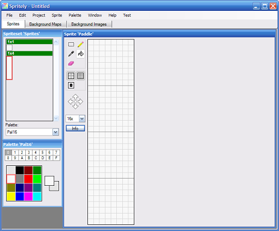
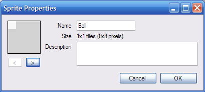
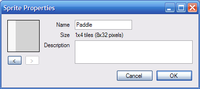
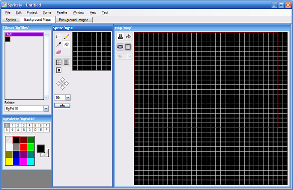
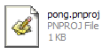
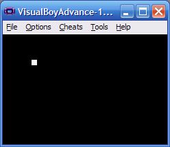
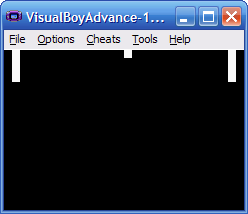
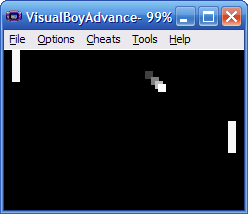
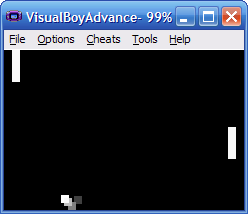
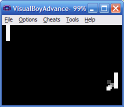

Creating Pong
This tutorial show you how to create the game Pong from start to finish using Spritely. This tutorial will show you how to create the game Pong for the Gameboy Advance or Nintendo DS. This tutorial covers the process from start to finish using Spritely (to create the sprites and initial project code) and devKitPro (to build the project into a GBA or NDS ROM).
This tutorial has been tested with devkitARM release 26 and Spritely version 0.19.20 beta and verified to work for both GBA and NDS projects.
Step 1 : Create a new project
Create a new directory for your project: c:\gamedev\projects\pong.Step 2 : Create your sprites
For Pong, we need to create 3 objects on the screen:
- the player's paddle
- the opponent's paddle, and
- the ball
The 2 paddles look the same so they can share the same sprite. Thus, we only need to create 2 different sprites: one for the paddles and another for the ball.
Launch Spritely:
- delete the default 2x2 sprite (we don't need it)
- create a 1x1 solid white square for the ball
- create a 1x4 (tall) solid white rectangle for the paddle
Select the paint bucket tool and fill each sprite with white paint.

Step 3 : Name your sprites
We need to name the sprites so that we can refer to them (by name) in the code.
You can change the name of a sprite by selecting the "Sprite::Properties..." menu item or by pressing the "Info" button in the sprite editing window.
Name the ball "Ball" and the paddle "Paddle". Pay attention to capitalization - begin each name with a capital letter and be consistent. We'll need to remember these names when we start editing the source code.


Step 4 : Create the background
Click on the "Background Maps" tab to look at the background sprites. By default, you should have a single 1x1 background sprite and a single background map that has this background sprite used throughout.
Use the paint bucket and fill the 1x1 sprite with black paint. Once you do this, the entire background map will turn black.

Step 5 : Save your progress
Select the "File::Save" menu to save your work as pong.xml in the c:\gamedev\projects\pong directory you created earlier.
Step 6 : Export project
Export a complete GBA project into c:\gamedev\projects\pong.
See the Creating a simple sprite tutorial if you need more information about how this is done.
Step 7 : Open the project in Programmer's Notepad
Open the "pong.pnproj" file. When you exported the project, this file was created for you in the c:\gamedev\projects\pong directory.

Step 8 : Build/Run your project
Now that we're all set up, we can build and run the project.
When you run the project, you'll see only the ball that you can move around using the arrow keys. We need to start modifying the source code to display the other objects and turn this into a complete game.

Step 9 : Define the objects from the sprites
Remember that we need 3 objects for pong: 2 paddles (1 each for the player and opponent) and 1 ball. Let's define these objects.
In the GBA and NDS, we can have a maximum of 128 objects, numbered 0 through 127. We're already using object #0 for the player, so we'll use object #1 and #2 for the opponent and ball.
Open game_state.h and look for the following lines:
game_state.h — Lines 14 - 16:
// The objects in our game. // Only 128 objects (0-127) can be defined at any time. const int kObj_Player = 0;
This assigns the player object to object #0.
Add the following 2 lines immediately after:
game_state.h — Lines 14 - 18:
// The objects in our game. // Only 128 objects (0-127) can be defined at any time. const int kObj_Player = 0; const int kObj_Opponent = 1; const int kObj_Ball = 2;
Here we are assigning the opponent's paddle (kObj_Opponent) to object 1 and the ball (kObj_Ball) to object 2.
Pay attention to capitalization! You'll need to remember (and type) these names later.
Step 10 : Add storage for the object locations
We need to keep track of each object's location on the screen, so we need to add the following to the GameState class:
Look for the following lines in game_state.h:
game_state.h — Lines 41 - 43:
// The (x,y) location of the object representing the player. int _xPlayer, _yPlayer; };
and add the following lines immediately after:
game_state.h — Lines 41 - 49:
// The (x,y) location of the object representing the player. int _xPlayer, _yPlayer; // The (x,y) location of the opponent's paddle. int _xOpponent, _yOpponent; // The (x,y) location of the ball. int _xBall, _yBall; };
Just like the earlier int _xPlayer, _yPlayer; line defined space to store the x- and y-coordinate of the player, these lines define space to store the x- and y-coordinate of the opponent (the opponent's paddle) and the ball.
Build your project after making these changes to make sure you don't have any compilation errors. Don't bother running since we haven't changed anything important yet. You won't see any visible differences from the previous version.
Step 11 : Create the new objects
Open game_state.cpp and look for the following lines in GameState::SetupStage_Level1:
game_state.cpp — Lines 48 - 49:
// Initialize the objects for the first level. InitObject(kObj_Player, 0);
Change this to:
game_state.cpp — Lines 48 - 49:
// Initialize the objects for the first level. InitObject(kObj_Player, kSprites_Paddle);
This will force the player object user the "Paddle" sprite.
Add the following 2 lines immediately after:
game_state.cpp — Lines 48 - 51:
// Initialize the objects for the first level. InitObject(kObj_Player, kSprites_Paddle); InitObject(kObj_Opponent, kSprites_Paddle); InitObject(kObj_Ball, kSprites_Ball);
These lines create the other 2 objects that we need for the game: the Opponent, which also uses a "Paddle" sprite and the Ball, which uses a "Ball" sprite.
Step 12 : Initialize the object location
Further down in GameState::SetupStage_Level1(), find:
game_state.cpp — Lines 53 - 59:
// Set the initial location of each object. _xPlayer = 0; _yPlayer = 0; MoveObjectTo(kObj_Player, _xPlayer, _yPlayer); // TODO: Add more initialization for level 1 here. }
These lines move the player object to its initial position. Change the _xPlayer = 0; line to:
game_state.cpp — Lines 53 - 59:
// Set the initial location of each object. _xPlayer = SCREEN_WIDTH - GetObjectWidth(kObj_Player) - 8; _yPlayer = 0; MoveObjectTo(kObj_Player, _xPlayer, _yPlayer); // TODO: Add more initialization for level 1 here. }
This will put the player's paddle on the right side of the screen. It calculates this position by starting from the right side of the screen (SCREEN_WIDTH) and subtracting off the width of the player's paddle (GetObjectWidth(kObj_Player). It then subtracts off an additional 8 pixels to add a bit of space behind (to the right of) the player's paddle.
We can now initialize the remaining objects (the opponent and the ball). Add the following lines immediately after:
game_state.cpp — Lines 53 - 67:
// Set the initial location of each object. _xPlayer = SCREEN_WIDTH - GetObjectWidth(kObj_Player) - 8; _yPlayer = 0; MoveObjectTo(kObj_Player, _xPlayer, _yPlayer); _xOpponent = 8; _yOpponent = 0; MoveObjectTo(kObj_Opponent, _xOpponent, _yOpponent); _xBall = SCREEN_WIDTH / 2; _yBall = 0; MoveObjectTo(kObj_Ball, _xBall, _yBall); // TODO: Add more initialization for level 1 here. }
This places the opponent's paddle on the left side of the screen (with 8 pixels of space behind it) and puts the ball at the middle of the top of the screen.
Step 13 : Build/Run
If you run now, you'll see 3 objects on the screen in their correct initial positions.
Only the player paddle will move - but it can move all over the screen. We need to fix it so that it only moved up and down. We also need to constrain the movement to stay within the screen bounds.

Let's make it so that the paddle only goes up/down:
Step 14 : Restrict player paddle movement
In GameState::Update_Level1(), which is a bit further down in game_state.cpp, remove the lines that handle the left and right arrow keys:
game_state.cpp — Lines 83 - 95:
// The arrow keys are used to move the current object. // We use CheckKeyHeld() because we want the action to repeat as long // as the player is holding down the button. int dx = 0; int dy = 0; if (CheckKeyHeld(KEY_LEFT)) dx = -1; if (CheckKeyHeld(KEY_RIGHT)) dx = 1; if (CheckKeyHeld(KEY_UP)) dy = -1; if (CheckKeyHeld(KEY_DOWN)) dy = 1;
To prevent the paddle from going off the top or the bottom of the screen, insert the following lines:
game_state.cpp — Lines 100 - 115:
// If we need to move the player. if (dx != 0 || dy != 0) { // Calculate the player's new y-location. int y = _yPlayer + dy; // Don't let the player go outside the screen boundaries. if (y < 0 || y > SCREEN_HEIGHT - GetObjectHeight(kObj_Player)) dy = 0; // Record the player's new location. _xPlayer += dx; _yPlayer += dy; // Move the player to the new location. MoveObjectTo(kObj_Player, _xPlayer, _yPlayer); }
This checks the player position against the screen boundary and stops the movement (by setting dy = 0;).
Step 15 : Build/Run
If you build and run, the player's paddle only moves up and down.
Let's make the ball move.
Step 16 : Make the ball move
Go to the end of GameState::Update_Level1() (which is at the end of game_state.cpp) and look for:
game_state.cpp — Lines 117 - 118:
// TODO: Add additional game state updates for level 1 here. }
And add the following code before the comment:
game_state.cpp — Lines 117 - 122:
// Move the ball. _xBall += 1; _yBall += 1; MoveObjectTo(kObj_Ball, _xBall, _yBall);// TODO: Add additional game state updates for level 1 here. }
Step 17 : Build/Run
Build and run. The ball moves, but it only goes down/right and it goes off the screen. It comes back after a while only to fly off again.

We want the ball to move different directions and we want it to bounce when it gets to the edge of the screen.
Step 18 : Add storage for the ball direction
Just like we need to keep track of the current ball position, we also need to keep track of its current direction. This will allow us to change the ball's direction and have it bounce correctly off of other objects.
Let's make some room to save the balls current direction. Go back to game_state.h and add the following to the GameState class:
game_state.h — Lines 47 - 52:
// The (x,y) location of the ball. int _xBall, _yBall; // The current direction that the ball is moving (-1 or 1). int _dxBall, _dyBall; };
These variables keep track of the x-direction (is the ball moving left or right) and the y-direction (is it moving up or down) for the ball.
Step 19 : Initialize the ball direction
Now go back to game_state.cpp and initialize the ball direction.
Add the following at the end of GameState::SetupStage_Level1():
game_state.cpp — Lines 62 - 71:
_xBall = SCREEN_WIDTH / 2; _yBall = 0; MoveObjectTo(kObj_Ball, _xBall, _yBall); // Initialize the ball direction. _dxBall = 1; _dyBall = 1; // TODO: Add more initialization for level 1 here. }
and change the ball update code at the end of GameState::Update_Level1() from:
game_state.cpp — Lines 121 - 127:
// Move the ball. _xBall += 1; _yBall += 1; MoveObjectTo(kObj_Ball, _xBall, _yBall); // TODO: Add additional game state updates for level 1 here. }
to:
game_state.cpp — Lines 121 - 126:
// Move the ball. _xBall += _dxBall; _yBall += _dyBall; MoveObjectTo(kObj_Ball, _xBall, _yBall); // TODO: Add additional game state updates for level 1 here. }
Step 20 : Build/Run
If you build/run now, it will act the same as before. but now that we're storing the direction in a variable, we can change it whenever we want.
Step 21 : Bounce off screen boundaries
Let's make the ball respect the screen boundaries.
Add the following to GameState::Update_Level1(), just before the code to move the ball:
game_state.cpp — Lines 117 - 136:
// Move the player to the new location. MoveObjectTo(kObj_Player, _xPlayer, _yPlayer); } // Check where the ball is moving. int x = _xBall + _dxBall; int y = _yBall + _dyBall; // Don't let the ball go off the left/right side of screen. if (x < 0 || x > SCREEN_WIDTH - GetObjectWidth(kObj_Ball)) _dxBall *= -1; // Don't let the ball go off the top/bottom of screen. if (y < 0 || y > SCREEN_HEIGHT - GetObjectHeight(kObj_Ball)) _dyBall *= -1; // Move the ball. _xBall += _dxBall; _yBall += _dyBall; MoveObjectTo(kObj_Ball, _xBall, _yBall);
The _dxBall *= -1; line is interesting. What this does is change 1 to -1 and -1 to 1. So if the ball is moving left (dxBall = -1), it is changed to move right (dxBall = 1). Similarly, a ball moving right (dxBall = 1) is changed to move left (dxBall = -1).
The _dyBall *= -1; does the same thing for the ball moving up/down.
Step 22 : Build/Run
If you build/run now, the ball will bounce around the screen, but it will still ignore the paddles

Step 23 : Bounce off paddles
Add the following code immediately after the code you just added:
game_state.cpp — Lines 129 - 142:
// Don't let the ball go off the top/bottom of screen. if (y < 0 || y > SCREEN_HEIGHT - GetObjectHeight(kObj_Ball)) _dyBall *= -1; // Does the ball collide with a paddle? if (CollideBBox(kObj_Player, kObj_Ball)) _dxBall = -1; if (CollideBBox(kObj_Opponent, kObj_Ball)) _dxBall = 1; // Move the ball. _xBall += _dxBall; _yBall += _dyBall; MoveObjectTo(kObj_Ball, _xBall, _yBall);
This code tells the ball to go left (_dxBall = -1) if it collides with the player's paddle and to go right (_dxBall = 1) if it collides with the opponent's paddle. Note that the y-direction is not affected - if the ball is going up when it hits a paddle, it will continue to go up after it bounces off.
However, if we try to build now, we'll get an error:
error: 'CollideBBox' was not declared in this scope
This means that it doesn't know about CollideBBox. We need to tell it where it is defined.
We do this by adding a reference to "collision.h" at the top of the file:
game_state.cpp — Lines 7 - 10:
#include "collision.h"#include "game_state.h" #include "game_utils.h" #include "object_utils.h"
Step 24 : Build/Run
Now if you build and run, it will successfully compile and the ball will bounce off the paddles.

Step 25 : Opponent AI
The opponent paddle is boring. Let's add some really simple AI (Artificial Intelligence) to make it play pong.
At the bottom of the GameState::Update_Level1(), just after the code to move the ball, add the following:
game_state.cpp — Lines 140 - 166:
// Move the ball. _xBall += _dxBall; _yBall += _dyBall; MoveObjectTo(kObj_Ball, _xBall, _yBall); // Handle opponent AI. dy = 0; // If the ball is above the paddle. if (_yBall < _yOpponent) { // Move the paddle up. dy = -1; // Unless that would move the paddle above the top of the screen. if (_yOpponent < 0) dy = 0; } else { // Otherwise, move the paddle down. dy = 1; // Unless that would move the paddle below the bottom of the screen. if (_yOpponent > SCREEN_HEIGHT - GetObjectHeight(kObj_Opponent)) dy = 0; } // Move the paddle. _yOpponent += dy; MoveObjectTo(kObj_Opponent, _xOpponent, _yOpponent); // TODO: Add additional game state updates for level 1 here. }
Step 26 : Build/Run
Build and run. The opponent's paddle will move up and down tracking the ball.
Finished!
And we're done!
Links to completed project
GBA:
NDS: